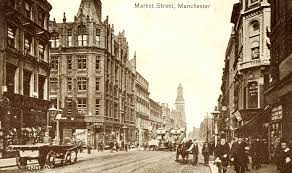

Discover Manchester
Manchester, a city located in the northwest of England, is known for its rich history, vibrant culture, and thriving economy. If you’re considering a visit to Manchester, there are several reasons that make it a must-see destination. Manchester was at the centre of the Revolution and rose to prominence as the UK's top cotton and textile manufacturer. Manchester is renowned for having been the world's first industrialised metropolis. Manchester is credited with building the world's first railway line in 1830 as well as the nation's first operational canal in 1761. Also Manchester is known to two of England’s most successful football clubs, Manchester United and Manchester City. Football fans can attend matches at Old Trafford and the Etihad Stadium, respectively. For cricket enthusiasts, the iconic Old Trafford Cricket Ground is a must-visit. Moreover, Manchester is also known for its vibrant music scene, with venues such as the Manchester Arena and O2 Apollo hosting world-class performances. also the city of Manchester, an English city in the northwest, has a lengthy and varied history lasting over two millennia. Manchester has been vital in building the social, economic, and cultural structure of the United Kingdom since its modest beginnings as a Roman fort and its crucial role in the Industrial Revolution.
In the football history At the beginning of the 1892–93 season, the team made its debut in the English First Division, which at the time was the top English football competition. In 1902, we renamed ourselves Manchester United Football Club, and in 1908, we won the first of our twenty English League championships. We relocated to Old Trafford, our current stadium, in 1910. The football scene in the city has also been significantly shaped by Manchester City FC. The team's early years were characterised by ups and downs until they achieved their first significant achievement in 1904 when they won the FA Cup. But throughout its existence, the club has struggled with money. Manchester City has seen a revival in recent years under new ownership, which has resulted in unheard-of success on the home and international front. The team has emerged as a major force in English football during the modern age, winning numerous Premier League championships and making a name for itself in European competitions. Manchester City Football Club, commonly known as just Manchester City, is a Manchester, England-based English professional football team. The club, which was first established in 1880 as St. Mark's West Manchester, has a long history and is now among the most prosperous football teams in England.
One of the biggest indoor arenas in Europe is the Manchester Arena, formerly the MEN Arena. It was founded in 1995 and has a long history. It is situated in Manchester, England. The arena took nearly three years to build, with DLA Design designing it and AMEC building it. On July 15, 1995, Her Majesty Queen Elizabeth II gave it the formal opening. Also arena has been a most liked location for a variety of events, such as comedy shows,sporting events, music concerts, and family entertainment. some of the biggest bands of musicians in the world have performed their. major sporting events like boxing matches and WWE wrestling events have also taken place there.